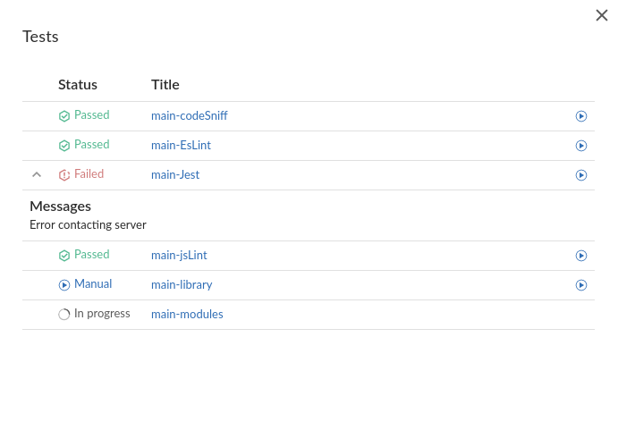
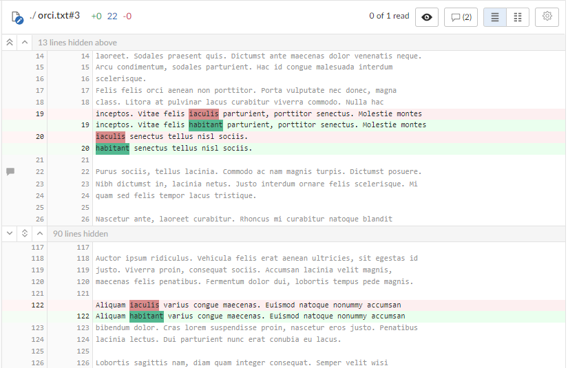

Review page quick reference
The new Swarm review page is now available as a preview. The new Swarm review page is described in this documentation.
By default, Swarm opens the original review page when you first start Swarm 2022.1. To access the review page preview, use the Preview toggle switch at the top of the review page. You can switch back to the original review page whenever you want to.
The new review page will replace the original page in a later Swarm release. The new page is currently missing a few features, but they will be added in a later release. If you need to use one of the missing features, switch back to the original Swarm page.
Help for the original Swarm review page is available in the Swarm 2021.2 documentation, see Review display.
Please share your feedback with us if there is anything you miss from the original review page. For contact details, see Getting help
The Swarm review page is used when reviewing changes:
- Log in to Swarm.
- To display the Swarm home page, click the Swarm
 icon above the menu.
icon above the menu. - If your dashboard is not already displayed, click the Dashboard tab.
- To open a review, click the ID of the review.
Jump directly to a specific area of the review page using the following links:
Review description
The review description is made up of the following elements:
- Review description header:
- Review information: Displays the following details:
- Review author avatar and name: The avatar and name of the review author. Hover over the avatar to see the name of the review author and hover over the name to see the ID of the review author. Click on the avatar or name to go to the profile of the review author, see Viewing another user's profile.
- Review type: Displays the review type, reviews can be pre-commit or post-commit.
- Review ID: The unique number used to identify the Swarm review.
- Review raised: When the review was requested.
- Version: The version of the review being viewed and the total number of review versions.
- Project branch: The project branch the review files are in, click to go to the project page.
- Last updated: When the review was last updated.
- Review state icon: a review can be in one of the following states:
- Needs review: The review has started and the changes need to be reviewed.
- Needs revision: The changes have been reviewed and the reviewer has indicated that further revisions are required.
- Approved: The review has been approved. The changes may need to be committed.
- Rejected: The review has been completed. The changes are undesirable and should not be committed.
- Archived: The review has been completed for now but it is not rejected, or approved. The review has been filed away in case it is needed in the future.
- Voting buttons: click a voting button to vote the review up or down.
- Change state button: Click to select a new state from the review dropdown menu. State change options are only displayed if you are authorized to make the state change:
- Needs revision: Select to request changes to the files in the review.
- Needs review: Select to request further review of the changes.
- Approved (only available if the voting requirements for the review are satisfied. For information on voting requirements, see Required reviewers): select to approve the review.
- Committed (only available for pre-commit reviews that have been approved): Select to commit the review.
- Approve and commit (only available for unapproved pre-commit reviews when the voting requirements for the review are satisfied. For information on voting requirements, see Required reviewers.): Select to approve and commit the review in a single step, see Approve and commit.
- Rejected: Select to reject the review.
- Archived: Select to archive the review.
- Review actions
 button: click the Review actions button to:
button: click the Review actions button to: - Add change: Select to add a changelist to the review. Options available depend on whether the review is pre-commit or post-commit. For information about adding a changelist to a review, see Add change.
- Download zip (if configured): Select to download a compressed archive of all of the files in the review, see Download files as a ZIP archive.
- Change author (if configured): Select to change the author of the review, see Change the review author.
- Join review (only if you are not a member of the review): Select to join the review. If you vote on a review, you automatically join the review and become a reviewer.
- Leave review (only if you are a member of the review): Select to leave the review.
- Obliterate review (by default, only available for users with admin or super user rights): See Obliterate Review.
- Mark all comments as read (only supported in the original Swarm review page): click to mark all of the comments on this review as read.
- Mark all comments as unread (only supported in the original Swarm review page): click to mark all of the comments on this review as unread.
- Disable notifications (only supported in the original Swarm review page): Select to disable notifications for this review.
- Refresh projects (only supported in the original Swarm review page): Select to check if the review files are associated with any projects created or updated after the review was last updated. If any projects are found that are not already associated with the review, the review is linked to them. See Refresh projects button.
- Try it out (only supported in the original Swarm review page and if configured): If your deployment system provides a URL to the deployment, you can select it to see the deployment results.
- Review information: Displays the following details:
- Review description: The review description is automatically copied from the changelist that was originally used to create the review. To change the review description, click the
 Edit button. Markdown content is displayed in the review description, but Markdown support is limited to prevent execution of raw HTML and JavaScript content. For information about Markdown, see Markdown in comments and review descriptions
Edit button. Markdown content is displayed in the review description, but Markdown support is limited to prevent execution of raw HTML and JavaScript content. For information about Markdown, see Markdown in comments and review descriptions- Update pending changelist checkbox in the edit description dialog (only available if you are editing the description of a pre-commit review and you are the original author of the changelist that created the review): Select the checkbox to also apply your review description changes to the original changelist description.
- Comments (n): Click to add a comment to the review description, view existing description comments, or hide existing description comments, see Commenting on a review description.
- Jobs (n) (if configured): Perforce jobs can be linked to the review. Click to add a Perforce job to the review, view jobs linked to the review, unlink a job from the review, or hide jobs on the review. For more information on Perforce jobs, see Jobs.
- Add a job: Click to add a job to the review. Select the job from the dialog that is displayed.
- jobnnnnnn (where nnnnnn is the job number): Click the job number to view details of the Perforce job. For more information about Perforce jobs, see Job display.
- button (only supported in the original Swarm review page): To unlink a job from the review, click the button of the job you are removing from the review.
Information panel
The information panel on the right side of the review page is collapsible and contains the following elements:
- Reviewers:
- Edit button (if enabled): click to edit the reviewers for the review
- Up vote and Down vote count: indicates the number of up votes and down votes the review has.
- Groups: lists groups that are reviewers for the review. When at least one person in the group has voted, the avatar displays a badge indicating whether the group, as a whole, has voted up or down. Click on the group to see who has voted, and how they have voted, see Group reviewer.
- Individuals: lists individuals that are reviewers for the review. When an individual has voted on the review, their avatar displays a badge indicating whether they voted up or down. For more information about individual reviewers, see Individual reviewer.
- Edit
- Tasks
- Task Summary icons: summary of the number and status of comments flagged as tasks for the review. For more information about tasks, see Tasks.
- Red Flag icon: indicates the numbers of open tasks on the review.
- Green Check Mark icon: indicates the numbers of tasks that have been addressed on the review.
- Blue Double-Check Mark icon: indicates the number of tasks that have been addressed and verified on the review.
- Show Task details
 button: click to display the Tasks dialog listing all tasks associated with the review. The tasks can be filtered by reporter and task type, and you can change the task state directly from the Task dialog. See Task details.
button: click to display the Tasks dialog listing all tasks associated with the review. The tasks can be filtered by reporter and task type, and you can change the task state directly from the Task dialog. See Task details.
- Task Summary icons: summary of the number and status of comments flagged as tasks for the review. For more information about tasks, see Tasks.
- Tests (if configured): displays the test results for the current review version in the information panel
-
 Passed: Displays the number of the tests that have passed for the review version.
Passed: Displays the number of the tests that have passed for the review version. -
 Failed: Displays the number of the tests that have failed for the review version.
Failed: Displays the number of the tests that have failed for the review version. -
 Manual: Displays the number of On Demand tests that can be run manually for the review version.
Manual: Displays the number of On Demand tests that can be run manually for the review version. -
 In Progress: Displays the number of tests that are running for the review version.
In Progress: Displays the number of tests that are running for the review version. -
Rerun test: If a test has completed you can rerun the test, click to rerun the test for the most recent version of the review.
-
Run test: If the review workflow has a test set to run On Demand, click to manually run the test for the most recent version of the review.
-
The Run test and Rerun test buttons are only available if you are logged in to Swarm, viewing the latest version of the review, and the test was called by a workflow.
-
The Rerun test button is not available for tests that are in progress.
-
When you click Run test or Rerun test, all of the buttons in the list are temporarily disabled while Swarm starts the test and checks if any other tests are in progress.
-
The Rerun test and Run test buttons are only available for tests that are run by a workflow. They are not available for tests that are run because they are configured on a project.
-
For information about iterating tests, see Iterate tests for affected projects and branches checkbox.
-
For information about private projects, see Private projects.
- < (only displayed if the information panel is expanded): click to collapse the panel.
- > (only displayed if the information panel is collapsed): click to expand the panel.
Show test details button: Click to view test run information for tests associated with the review version:

If your continuous integration system calls back to Swarm with a URL, the test run is linked to the URL provided. If the test result contains any messages, click the Show more button to the left of the test to view them
When the content of a review is unchanged between review versions, the tests are not rerun because the files have not changed. In this case, the earlier test results are displayed and marked with the word (Copy). You can manually run these tests if required by using the Run test button.
The following actions are available from the Tests dialog for tests called by a workflow:
Private projects: if a test for a private project is added to your review because Iterate tests for affected projects and branches is selected for the test, Swarm honors the private project's permissions and displays it as Private project in the test list to users that do not have permission to view it.
Files tab
Use the Files tab to view the files in the review and to see how they have changed using the Swarm diff (noun) A set of lines that do not match when two files, or stream versions, are compared. A conflict is a pair of unequal diffs between each of two files and a base, or between two versions of a stream.
(verb) To compare the contents of files or file revisions, or of stream versions.
See also conflict. view.
(noun) A set of lines that do not match when two files, or stream versions, are compared. A conflict is a pair of unequal diffs between each of two files and a base, or between two versions of a stream.
(verb) To compare the contents of files or file revisions, or of stream versions.
See also conflict. view.

Swarm supports stream specs in your workspace using the Private editing of streams feature. If a changelist or review contains a stream spec, it will be displayed first in Files with the prefix stream: //, for example: stream://MyStreamDepotName/MyStreamSpecLocationName. A changelist/review can only contain one stream spec.
The Files tab is made up of the following elements (from left to right):
- Review version selectors: Select which version of the review you want to diff. For details on using the version selectors, see Select review versions to view.
- File listing header:
Review version and common file path summary:
- Comparing the files in the latest version of the review to Base
 For files: The file revision that contains the most common edits or changes among the file revisions in the source file and target file paths.
For checked out streams: The public have version from which the checked out version is derived. or Head The most recent revision of a file within the depot. Because file revisions are numbered sequentially, this revision is the highest-numbered revision of that file.: Displays the current revisions of the files in the review, the changelist that the review is based on, and the common path for the review files.
For files: The file revision that contains the most common edits or changes among the file revisions in the source file and target file paths.
For checked out streams: The public have version from which the checked out version is derived. or Head The most recent revision of a file within the depot. Because file revisions are numbered sequentially, this revision is the highest-numbered revision of that file.: Displays the current revisions of the files in the review, the changelist that the review is based on, and the common path for the review files. - Comparing the files in two versions of a review: Displays which two versions of the review are being compared, which changelists the files are in, and the common path for the files in both versions of the review.
- Comparing the files in the latest version of the review to Base
- File change summary icons: Indicate the number of files that have been added, edited, and deleted in this version of the review.

- File list:
- File filter: Filter by file name, file extension, or folder name to find the files you are interested in.
- File change type icons: Each file is marked with an icon indicating whether the file was:
-
 Added/Branched/Imported
Added/Branched/Imported -
 Edited/Integrated
Edited/Integrated -
 Deleted
Deleted
- File content panel header: The file content panel header contains the following elements from left to right:
- File name: The name and revision of the file you are currently viewing.
- File change summary: The number of text sections (chunks) that have been added, edited, and deleted for the file.
- Mark file as read button (only supported in the original Swarm review page): Click to mark the file as read.
- Collapse or expand all inline comments for this file:
- Collapse all inline comments for this file button (only displayed if inline comments are expanded): Click to collapse all of the inline file comments.
- Expand all inline comments for this file button (only displayed if inline comments are collapsed): Click to expand all of the inline file comments.
- Show Diffs In-Line button: displays the diffs inline.
- Show Diffs Side-by-Side button: displays the diffs side-by-side.
- More options More options
 button: Click the More options button and toggle the following display options on or off:
button: Click the More options button and toggle the following display options on or off:- Show whitespace characters (display of CRLF line endings is only supported in the original Swarm review page): Toggles the display of whitespace characters (such as space, tab, and newline) for all files.
- Ignore whitespace differences:
- Off: Makes it easier to identify changes in file types where whitespace is important.
- On: Whitespace changes are not highlighted, this makes it easier to see the important changes in file types where whitespace changes are not important.
File diff panel
- File diff:
- Red indicates lines that have been removed.
- Blue indicates lines that have been modified.
- Green indicates lines that have been added.
-
Show more context buttons:
Sometimes, the concise diff view needs to be expanded to fully understand the context of the change, use the Show More and Show All buttons to display extra lines around the change:
- Show All Lines to Start of File
 button (only displayed for the first change in the file): click to show all of the lines up to the start of the file.
button (only displayed for the first change in the file): click to show all of the lines up to the start of the file. - Show More Lines for the Code Below
 button: click to show 10 more lines above the change, the extra lines are displayed in the pane below the button.
button: click to show 10 more lines above the change, the extra lines are displayed in the pane below the button. - Show Entire Section
 button: click to show all of the lines between the changes that are above and below the button, the two changes and the lines between them are displayed in a single pane.
button: click to show all of the lines between the changes that are above and below the button, the two changes and the lines between them are displayed in a single pane. - Show More Lines for the Code Above
 button: click to show 10 more lines below the change, the extra lines are displayed in the pane above the button.
button: click to show 10 more lines below the change, the extra lines are displayed in the pane above the button. - Show All Lines to End of File
 button (only displayed for the last change in the file): click to show all of the lines down to the end of the file.
button (only displayed for the last change in the file): click to show all of the lines down to the end of the file.
When you view a diff, the changes are highlighted:
Example inline diff view:


The following buttons are not available for stream specs.
Comments tab
The Comments tab is used to view all of the comments in the review.

Comments are made up of the following elements:
- Send all notifications (n) (only supported in the original Swarm review page): Comment notifications are delayed by default, click to manually send the notification immediately for the review. For more information about comment notification delay, see Comment notification delay.
- Comment detail:
- Commenter avatar and name: The avatar and name of the user that made the comment. Hover over the avatar to see their name and hover over their name to see their ID. Click on the avatar or name to see their user profile. For information about user profiles, see Viewing another user's profile.
- Review ID: The unique number used to identify the Swarm review.
- Version link (includes the file and line number if the comment is on a line in a file): Click to go to the review version the comment was made on. If the comment is made inline in a file the link will take you to that line in the file.
- Filepath link (only if the comment is made on a file): Link to the file the comment is made on, includes line number if the comment was made on line in the file.
- Comment raised: When the comment was made.
- Tasks: Flagging review comments as tasks is a lightweight workflow within a review that helps authors and reviewers prioritize review feedback. Any comment on a review can be flagged as a task, indicating to the review's author that the described issue needs to be addressed, and that the review is unlikely to be approved without a fix. For information about working with tasks, see Tasks.
- No flag displayed: The comment has not been flagged a task. To flag the comment as a task, click the Comment actions button and select Flag as Open task.
- Flagged as a Task button: the comment has been flagged as a task. Click to confirm that the task has been addressed, or to remove the task flag from the comment.
- Task Addressed button: the comment task has been addressed. Click to verify that the task has been addressed correctly, to reopen the task if it has not been addressed correctly, or to verify and archive the task (only supported in the original Swarm review page).
- Task Verified button: the comment task has been addressed and has been verified as correct. Click to reopen the task you think it has not been addressed correctly.
- No flag displayed: The comment has not been flagged a task. To flag the comment as a task, click the Comment actions
- Restore button (archived root level comments only): Click to restore an archived comment. For more information about archiving and restoring comments, see Archiving comments and Restoring comments.
- Comment actions button:
- Mark comment as read (unread comments only): Select to mark a comment as read, the comment will only be marked as read for you. For more information on marking a comment as read or unread, see Mark comments as read.
- Flag as Open task: Select flag a comment as a task. For information about working with tasks, see Tasks.
- Archive: (only available for root level comments): Select to archive a comment and any replies to that comment. For more information about archiving and restoring comments, see Archiving comments and Restoring comments.
- Comment context (only if the comment is made inline in a file): Displays several lines of code before the line of code the comment is attached to. This helps makes sense of the comments should later changes remove those lines.
- Comment content: This can be text, a URL, or an attachment (only supported in the original Swarm review page). For more information about the content of comments, see Comment features.
- Reply button: Click to reply to the comment. For information about replying to comments, see Reply to comments.
- Edit button (only available for comments that you have made): Click to edit the comment. For information about editing comments, see Editing comments.
Add a comment
To add a comment, type your comment in the open comment text box at the bottom of the Comments tab page.
To reply to a comment, click the Reply button and type your comment in the comment text box.
- Comment text box: type your comment in the text box.
- Flag as a Task checkbox: Select to flag the comment as a task. For more information about tasks, see Flag a comment as a task.
- Post button: Click to post your comment. The comment is posted immediately but the comment notification is delayed, see Comment notification delay.
- Post and notify (n) link: Click to post your comment and send the comment notification immediately.
Where (n) is the number of delayed comment notifications in the queue waiting to be sent, this number does not include the current comment you are working on.
Activity tab
The Activity tab presents a list of the events on this review.

Events in the activity tab include:
- When the review was started
- When a new reviewer joins the review
- When the review's state changes
- When the review's files are updated
- When a reviewer votes on the review
- When someone comments on the review, or one of its files
- When tests pass or fail, provided continuous integration is configured


{kind=link}